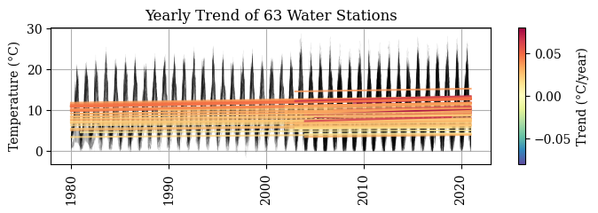
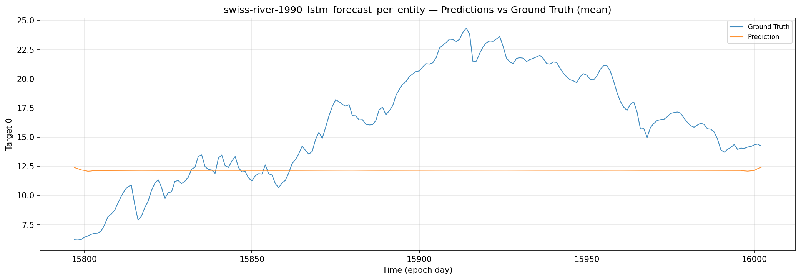
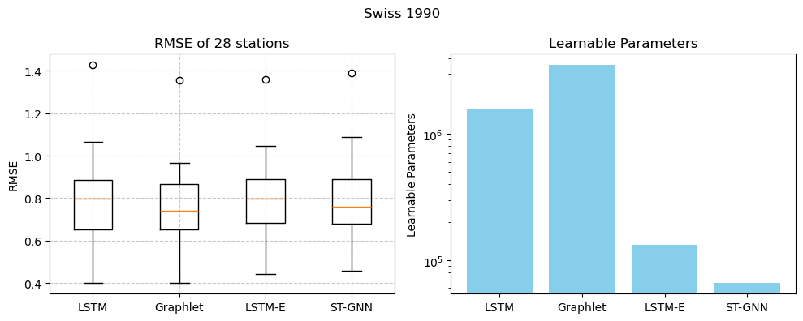
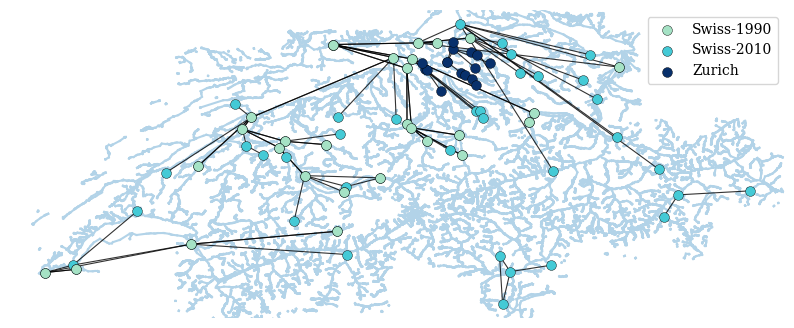
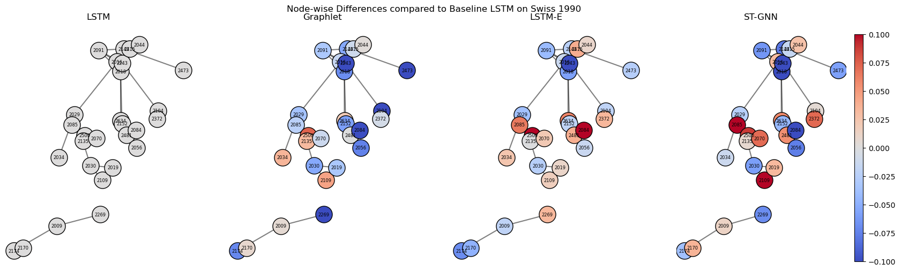

manifest.yaml

Preview
| Timestamp (UTC) | Station | Value (m³/s) | QC | Basin |
|---|
transformer-entity-aware-v3
run t-002
epoch 56 / 80 · started 14:23 UTC


val MSE
0.0822
−18.6 % vs baseline
val MAE
0.1293
−14.2 %
GPU memory
9.8 / 24 GB
A100 · cu126
throughput
142 step / s
batch 64
config.yaml
POST
api.liulian.ch/v1/forecast
p50 2.3 ms
p99 8 ms
throughput 1 240 r/s
Forecast discharge at any Swiss station, 1 – 72 h horizon. Returns mean, 95 % CI, and threshold-crossing probability.
Input
Rhein-Basel · RHE-BS
0.95
json
csv
parquet
Output
0 ms
crossing 2026-05-08T14:00Z
p 0.87
risk elevated
forecast.py
Flood risk this week
Insight · grounded in swiss-river-1990

